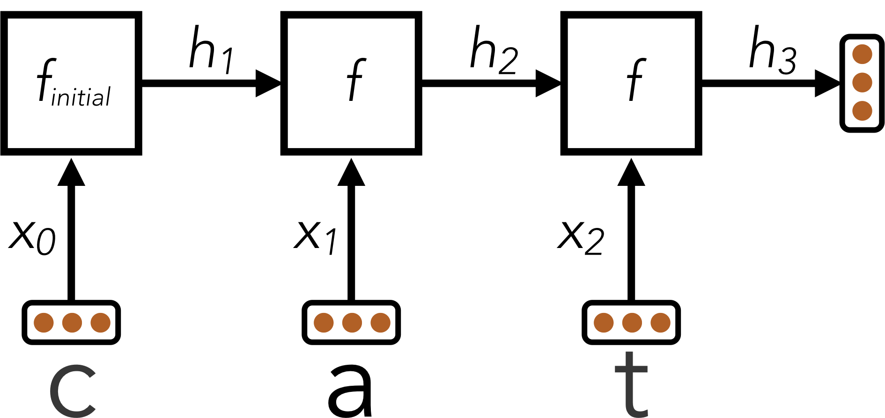

TP 2 : Réseaux de neurones
La composition des équipes est fournie avec cet énoncé et est obligatoire. [cliquez ici pour voir]
Dans ce projet, vous devez monter différents réseaux de neurones pour différentes tâches de classification et de régression.
Introduction
Ce projet sert d'introduction aux réseaux de neurones profonds.
Le code pour ce projet contient les fichiers ci-dessous, disponibles dans un fichier compressé.
| Fichiers à modifier : | |
models.py |
Contient les réseaux de neurones pour les différentes applications |
| Fichiers à lire seulement (NE PAS modifier) : | |
nn.py |
Mini-librairie de réseau de neurones |
| Autres fichiers : | |
autograder.py |
Auto-correcteur du projet |
backend.py |
Backend pour différentes tâches |
data |
Contient les différentes données d'entraînement |
Fichiers à modifier et soumettre : vous devez remplir les sections manquantes du fichier
models.py. Il faut ne faut pas modifier les autres fichiers.
Évaluation : l'auto-correcteur s'assure du bon fonctionnement de votre code. Ne changez aucun nom de fonction ou nom de classe dans le code, sans quoi l'auto-correcteur ne fonctionnera pas. L'auto-correcteur ne détermine pas entièrement votre résultat final. La qualité de votre implémentation - et non les résultats obtenus par l'auto-correcteur - déterminent votre résultat final.
Utilisation des données : une partie des notes obtenues dépend de la performance de votre modèle sur l'ensemble de test. La base de code n'offre aucun API permettant d'accéder à cet ensemble directement. Par conséquent, toute tentative de modification des données de test sera considérée comme de la tricherie et sera sévèrement pénalisée en conséquence.
Aide : N'hésitez pas à contacter les assistants à l'enseignement pour ce cours afin de vous aider dans le travail.
Installation
Pour ce projet, vous devez installer les deux librairies suivantes :
- numpy, une librairie de calcul matriciel - installation
- matplotlib, une librairie de visualisation - installation
- PyTorch, un framework de machine learning - installation
Note : Vous pouvez réutiliser l'environnement du TP1 dans lequel vous avez déjà installé ces dépendances. Il vous manquera seulement l'installation de PyTorch.
On rappelle ci-dessous comment installer des librairies à l'aide de conda et pip :
conda activate [le nom de votre environnement]pip install numpypip install matplotlibpip install torchContrairement au TP1, vous ne devriez pas utiliser ces librairies directement (a l'exception de PyTorch pour la question 4). Elles sont toutefois nécessaires au fonctionnement de l'auto-correcteur et du backend.
Pour vérifier l'installation des dépendances, exécutez la commande suivante :
python autograder.py --check-dependenciesVous devriez alors observer une fenêtre s'ouvrir avec un ligne qui tourne dans un cercle

Code fourni
Pour ce projet, vous avez accès à une mini-librairie de réseau de neurones (nn.py) ainsi qu'une collection de base de données (backend.py).
La librairie nn.py définie une collection d'objets node. Chaque node
représente un nombre réel ou une matrice de nombres réels. Les opérations sur les objets node sont optimisées
et donc plus rapides
que les types primitifs de Python (comme les listes par exemple).
Lorsqu'on entraîne un réseau de neurones, on met à jour les paramètres après avoir effectué des prédictions sur plusieurs données contrairement au perceptron du TP1 où les poids étaient affectés après chaque prédiction. Cette procédure d'entraînement par lot permet ainsi au réseau de mieux se généraliser et de ne pas se sur-spécialiser sur chacune des observations singulières. L'argument $\text{batch_size}$ réfère au nombre d'observations utilisées pour mettre à jour le réseau. Aussi, veuillez noter que le paramètre $\text{num_features}$ dénote le nombre d'attribut ou de variables associées à chaque donnée.
Voici une brève description de l'API :
-
nn.Constantreprésente une matrice de nombres réels utilisée pour représenter les données en entrée, la sortie des modèles d'apprentissage, ou les étiquettes. -
nn.Parameterreprésente les paramètres qu'on optimise (par exemple, la matrice W dans le perceptron multi-classe du TP1). -
nn.DotProductcalcule le produit scalaire. -
nn.as_scalarpeut extraire un nombre à virgule flotante d'un node. -
nn.Addeffectue une addition de matrice.- Utilisation :
nn.Add(x, y)accepte deux node de dimension $\text{batch_size} \times \text{num_features}$ et retourne un node de dimension $\text{batch_size} \times \text{num_features}$.
- Utilisation :
-
nn.AddBiasajoute un vecteur de biais.- Utilisation :
nn.AddBias(features, bias)accepte une matricefeaturesde dimension \(\text{batch_size} \times \text{num_features}\) et un biaisbiasde dimension \(1 \times \text{num_features}\). Retourne un node de dimension \(\text{batch_size} \times \text{num_features}\).
- Utilisation :
-
nn.Linearapplique une transformation linéaire (multiplication de matrice) sur les arguments en entrée.- Utilisation :
nn.Linear(features, weights)acceptefeaturesde dimension \(\text{batch_size} \times \text{num_input_features}\) etweightsde dimension \(\text{num_input_features} \times \text{num_output_features}\), et retourne un node de dimension \(\text{batch_size} \times \text{num_output_features}\).
- Utilisation :
-
nn.ReLUapplique la fonction Rectified Linear Unit \(relu(x) = \max(x, 0)\) sur chaque élément de l'argument en entrée.- Utilisation :
nn.ReLU(features), retourne un node avec la même dimension que l'argument en entrée.
- Utilisation :
-
nn.SquareLosscalcule une perte quadratique sur un batch (utilisée pour la régression).- Utilisation :
nn.SquareLoss(a, b), oùaetbont comme dimension \(\text{batch_size} \times \text{num_outputs}\).
- Utilisation :
-
nn.SoftmaxLosscalcule la fonction softmax sur un batch (utilisée pour les problèmes de classification).- Utilisation :
nn.SoftmaxLoss(logits, labels), oùlogitsetlabelsont comme dimension \(\text{batch_size} \times \text{num_classes}\). Le terme “logits” refère aux scores produits par un modèle. Les étiquettes "labels" doivent être non-négatives.
- Utilisation :
nn.gradientscalcule le gradient d'une perte par rapport aux paramètres passés comme arguments.-
Utilisation :
nn.gradients(loss, [parameter_1, parameter_2, ..., parameter_n])retourne une liste[gradient_1, gradient_2, ..., gradient_n], où chaque élément est unnn.Constantcontenant le gradient de la perte par rapport à un paramètre.
-
Utilisation :
nn.as_scalarconverti un node en type primitif Python pouvant s'avérer utile comme critère d'arrêt lors de l'apprentissage.-
Utilisation :
nn.as_scalar(node), oùnodeest soit un node de perte ou possède la forme(1,1).
-
Utilisation :
Additionnellement, les instances de datasets possèdent les deux
méthodes suivantes :
-
dataset.iterate_forever(batch_size)génère une suite infinie de batch pour un exemple. -
dataset.get_validation_accuracy()retourne la métrique de justesse ("accuracy") de votre modèle sur l'ensemble de validation. Cette métrique peut aussi être utile comme critère d'arrêt lors de l'apprentissage.
Exemple : Régression linéaire avec le Perceptron
À titre d'exemple, essayons de trouver les paramètres d'une équation linéaire permettant de prédire les valeurs de \(\mathbf{Y}\). On commence par \(|\mathbf{Y}| = 4\). L'équation optimale obtenue devrait être \( y = 7x_0 + 8x_1 + 3 \) (pour vous en convaincre, vous pouvez effectuer les calculs et remarquer la différence entre la prédiction et la valeur réelle). Autrement dit, à partir d'une matrice de données \(\mathbf{X}\), on essaie de trouver les paramètres \(m_0\), \(m_1\) et \(b\) qui permettent de prédire fidèlement chaque \(y \in \mathbf{Y}\).
and
Supposons que les données sont fournies en node nn.Constant :
>>> x
<Constant shape=4x2 at 0x10a30fe80>
>>> y
<Constant shape=4x1 at 0x10a30fef0>
Nous entraînons un modèle de la forme \( f(x) = x_0 \cdot m_0 + x_1 \cdot m_1 +b \).
D'abord, on crée nos paramètres optimisables. Sous forme de matrice, ils sont de la forme suivante:
et
Ces formules se traduisent en code comme suit :
m = nn.Parameter(2, 1)
b = nn.Parameter(1, 1)
Leur interprétation en chaîne de caractères devrait donner :
>>> m
<Parameter shape=2x1 at 0x112b8b208>
>>> b
<Parameter shape=1x1 at 0x112b8beb8>
Ensuite, on calcule une prédiction de notre modèle pour un y :
xm = nn.Linear(x, m)
y_hat = nn.AddBias(xm, b)
Le but est que notre prédiction soit exacte, c'est-à-dire \(\hat{y} = y\). En régression linéaire, une telle tâche est réalisée en minimisant la somme des différences au carré : \( \mathcal{L} = \frac{1}{2N} \sum_{(x, y)} (y - f(x))^2 \).
On construit donc un node de type loss :
loss = nn.SquareLoss(y_hat, y)
La base de code permet le gradient de la perte en fonction des paramètres :
grad_wrt_m, grad_wrt_b = nn.gradients(loss, [m, b])
L'impression des gradients devrait donner :
>>> xm
<Linear shape=4x1 at 0x11a869588>
>>> y_hat
<AddBias shape=4x1 at 0x11c23aa90>
>>> loss
<SquareLoss shape=() at 0x11c23a240>
>>> grad_wrt_m
<Constant shape=2x1 at 0x11a8cb160>
>>> grad_wrt_b
<Constant shape=1x1 at 0x11a8cb588>
On utilise la méthode update afin de mettre en jour les paramètres.
Voici un exemple de mise à jour de m (on assume qu'une variable multiplier a été initialisée avec un taux d'apprentissage adéquat) :
m.update(grad_wrt_m, multiplier)
Si on inclut la mise à jour de b et qu'on répète les opérations
précédentes
dans une structure itérative, on retrouve une procédure complète de régression linéaire.
Lors de l'entraînement du réseau, vous recevez une instance de dataset
pour laquelle vous retrouvez les batch d'entraînement en appelant dataset.iterate_once(batch_size) :
for x, y in dataset.iterate_once(batch_size):
...
L'exemple suivant extrait un batch size de 1 (c-à-d, un seul exemple d'entraînement) :
>>> batch_size = 1
>>> for x, y in dataset.iterate_once(batch_size):
... print(x)
... print(y)
... break
...
<Constant shape=1x3 at 0x11a8856a0>
<Constant shape=1x1 at 0x11a89efd0>
Les données d'entrées x et les étiquettes associées y sont données sur la forme de node de type nn.Constant. Le format de x
est (batch_size, num_features), et le format de y est (batch_size, num_outputs).
Voici un exemple de produit scalaire de x avec lui-même représenté
d'abord en tant que node et ensuite en tant que type primitif Python.
>>> nn.DotProduct(x, x)
<DotProduct shape=1x1 at 0x11a89edd8>
>>> nn.as_scalar(nn.DotProduct(x, x))
1.9756581717465536
Astuces pour les réseaux de neurones
Dans le projet, vous devrez implémenter les modèles suivants :
- Q1 : Régression non linéaire avec un MLP
- Q2 : Reconnaissance d'images de Fashion-MNIST avec un MLP
- Q3 : Identification automatique de langues avec un RNN
- Q4 : Reconnaissance d'images un CNN implémenté avec PyTorch
Implémenter un réseau de neurones
Votre implémentation du réseau de neurones passe par nn.py.
Comme nous avons vu dans le cours, un réseau de neurones de base possède une ou plusieurs couches qui effectuent toutes une opération linéaire (comme le
perceptron).
Les couches sont séparées par une fonction d'activation non-linéaire qui permet au réseau de modéliser des fonctions complexes.
Nous utiliserons la fonction ReLU comme fonction d'activation. Celle-ci est définie comme \(relu(x) = \max(x,
0)\). Par exemple, la sortie \(\mathbf{f}(\mathbf{x})\) d'un réseau simple à deux couches
pour une donnée \(\mathbf{x}\) est donnée par:
\[\mathbf{f}(\mathbf{x}) = relu(\mathbf{x} \cdot \mathbf{W_1} + \mathbf{b_1}) \cdot \mathbf{W_2} +
\mathbf{b}_2 \]
Ce réseau optimise les paramètres \(\mathbf{W_1}\), \(\mathbf{W_2}\), \(\mathbf{b}_1\)
et \(\mathbf{b}_2\) par la descente de gradient stochastique. \(\mathbf{W_1}\) est une matrice de format \(i \times h\),
où \(i\) et \(h\) correspondent respectivement au nombre de lignes du vecteur \(\mathbf{x}\) et la taille
de la couche cachée.
\(\mathbf{b_1}\) est un vecteur de dimension \(h\). Le choix de \(h\) est laissé à la discrétion du programmeur
ou de la programmeuse. Vous devez toutefois vous assurer que les dimensions entre les couches soient
adéquates sans quoi le produit scalaire ne fonctionnera pas ou retournera une matrice de dimension absurde.
L'utilisation d'un grand \(h\) permet généralement un plus grand pouvoir représentational du modèle,
mais ajoute plus de paramètres à optimiser en plus de dégénérer vers un modèle qui se généralise mal sur des
données nouvelles (sur-apprentissage).
On peut créer des réseaux plus profonds en ajoutant des couches. Par exemple, pour un réseau à trois couches, on a : \[ \mathbf{f}(\mathbf{x}) = relu(relu(\mathbf{x} \cdot \mathbf{W_1} + \mathbf{b_1}) \cdot \mathbf{W_2} + \mathbf{b}_2) \cdot \mathbf{W_3} + \mathbf{b_3} \]
Note sur les batch
Contrairement au perceptron, où vous optimisiez les paramètres après chaque exemple d'entraînement, vous devez maintenant optimiser le réseau en batch, c'est-à-dire en prenant plusieurs exemples d'entraînement au-lieu d'un seul. Formellement, au-lieu de mettre à jour les poids après chaque entrée \(x\) de taille D, vous devez considérer un ensemble de N d'entrées représenté comme une matrice \(X\) de dimension \(N \times D\).
Note sur l'initilisation des paramètres
Au premier TP, nous initialisions les paramètres par des valeurs nulles, ce qui est généralement déconseillé. En pratique, les paramètres du réseau de neurones sont initialisés pseudo-aléatoirement. En conséquent, vous pouvez être malchanceux et échouer certaines tâches de classification avec une très bonne architecture (problème des minima locaux). Cependant, ce résultat est plutôt rare dans notre contexte. Donc, une série de résultats négatifs avec l'auto-correcteur devrait être un indicateur que votre modèle n'est pas bien implémenté ou que vous devriez explorer d'autres architectures.
Astuces
Voici quelques astuces pour vous aider dans l'élaboration des réseaux de neurones :
- Soyez systématique et conservez une trace de chaque architecture essayée avec leurs hyper-paramètres (taille des couches, taux d'apprentissage, etc.) respectifs, ainsi que les résultats obtenus.
- Les réseaux profonds dépendent d'une multitude de paramètres et une mauvaise combinaison de ceux-ci peut nuire à leur performance. Commencez donc par un réseau simple (seulement deux couches et une seule activation) afin de déterminer un bon taux d'apprentissage et un bon nombre de neurones pour la couche cachée. Vous pouvez ensuite complexifier avec plus de couches ayant des dimensions similaires.
- Votre taux d'apprentissage est l'hyper-paramètre le plus déterminant. S'il est mauvais, le choix des autres hyper-paramètres importera peu. Vous pouvez utiliser la meilleure architecture connue et modifier le taux d'apprentissage de telle sorte que ses performances deviennent gênantes. Un taux trop lent produit un modèle qui converge très lentement; par contraste, un taux trop rapide ne convergera probablement jamais. Commencez en essayant différents taux et observez la courbe d'apprentissage, c'est-à-dire comment la perte évolue après chaque itération. Si votre perte augmente, c'est signe que votre taux d'apprentissage est trop élevé.
- Des tailles de batch plus petites demandent des taux d'apprentissage petits.
- Vos couches cachées ne devraient pas avoir trop de neurones sans quoi la précision du réseau diminuera, mais le temps d'entraînement augmentera. L'auto-correcteur devrait demander au plus entre 2 et 12 minutes.
- Si votre modèle retourne des valeurs abbérantes comme Infinity ou NaN, votre taux d'apprentissage est probablement trop élevé.
-
Valeurs recommandées pour les hyper-paramètres :
- dimension des couches cachées : entre 10 et 400;
- dimension des batch : entre 1 et la taille des données;
- taux d'apprentissage : entre 0.001 et 1.0;
- nombre de couches cachées : entre 1 et 3.
Question 1 (10 points) : Régression non-lineaire avec un MLP
Pour cette question, vous entrainerez un réseau de neurones afin d'approximer la fonction \(\frac{x\text{cos}(x)}{4}\) sur l'intervalle \([-2\pi,2\pi]\)
Vous devrez compléter l'implémentation de la classe RegressionModel dans
models.py. Pour ce problème, une architecture relativement simple devrait suffir
(voir Astuces pour les réseaux de neurones). Utilisez nn.SquareLoss comme perte.
Tâches :
- Implémenter
RegressionModel.__init__avec toute initialization nécessaire; - Implémenter
RegressionModel.runpour renvoyer un noeud $\text{batch_size} \times 1$ qui représente les predictions de votre modèle; - Implémenter
RegressionModel.get_lossqui retourne la perte pour les entrées et les cibles données; - Implémenter
RegressionModel.train, qui doit entrainer votre modèle en utilisant des mise-à-jours basées sur les gradients.
Il n'y a qu'un seul jeu de données pour cette tâche (pas de validation ni de test car les données peuvent etre générées à la volée).
Votre implémentation doit obtenir une perte inférieure ou égale à 0.02 pour avoir tous les points. Vous pouvez utiliser la perte sur
l'ensemble d'entrainement pour déterminer quand vous arrêter (utilisez nn.as_scalar pour convertir
un loss node en un nombre Python). Notez que le modèle peut prendre plusieurs minutes à être entrainé.
Pour tester votre implémentation, utilisez l'auto-correcteur comme suit :
python autograder.py -q q1Barème
| Critère | Points |
| Code fonctionnel | 3 |
| Perte sur le jeu de test <= 0.02 | 5 |
| Qualité / lisibilité du code | 1 |
Pas de boucles for inutiles (code vectorisé) | 1 |
| Total | 10 |
Question 2 (10 points) : Identification d'images (Fashion-MNIST) avec un MLP
Pour cette question, vous allez entrainer un réseau pour classifier des articles de mode du jeu de données Fashion-MNIST qui contient 60,000 exemples d'entraînement et 10,000 exemples de test.
Chaque image est de taille $28 \times 28$ pixels, representée par un vecteur réel de dimension $784$. Chaque cible fournie est un vecteur de dimension $10$ avec des zéros pour toutes les valeurs à l'exception d'un $1$ à la position de la classe correcte (One-Hot Encoding).
Complétez l'implémentation de la classe FashionClassificationModel dans models.py. FashionClassificationModel.run() devrait retourner un node $\text{batch_size} \times 10$ contenant des scores, où un score plus élevé indique une plus grande probabilité qu'un article appartienne à une classe particulière. Vous devez utiliser nn.SoftmaxLoss pour la perte. N'utilisez pas de fonction d'activation (ReLU) sur la dernière couche de votre réseau.
Pour cette question et la question 3, en plus des données d'entrainement, il y a aussi des jeux de données de validation et de test. Vous pouvez utiliser dataset.get_validation_accuracy() pour calculer la précision de votre modèle sur le jeu de données de validation, ce qui peut être utile pour décider quand arrêter l'entrainement. Le jeu de données de test sera utilisé par l'auto-correcteur.
Pour recevoir les points sur cette question, votre modèle doit atteindre une précision de 80% (ou plus) sur le jeu de test. Notez que l'auto-correcteur vous note sur la précision sur le jeu de test. Ainsi, même si votre modèle atteint 80% de précision sur le jeu de validation, il peut obtenir moins sur le jeu de test. Il peut donc être utile d'arrêter l'entrainement au dela de 80% (81, 82%).
Tâches :
- Implémenter
FashionClassificationModel.__init__avec toute initialization nécessaire; - Implémenter
FashionClassificationModel.runpour renvoyer un noeud $\text{batch_size} \times 10$ qui représente les predictions de votre modèle; - Implémenter
FashionClassificationModel.get_lossqui retourne la perte pour les entrées et les cibles données; - Implémenter
FashionClassificationModel.train, qui doit entrainer votre modèle en utilisant des mise-à-jours basées sur les gradients.
Pour tester votre implémentation, utilisez l'auto-correcteur comme suit :
python autograder.py -q q2À titre de référence voici à quoi correspondent les labels :
| Label | Article |
| 0 | T-shirt/top |
| 1 | Trouser |
| 2 | Pullover |
| 3 | Dress |
| 4 | Coat |
| 5 | Sandal |
| 6 | Shirt |
| 7 | Sneaker |
| 8 | Bag |
| 9 | Ankle boot |
Barème
| Critère | Points |
| Code fonctionnel | 3 |
| Précision sur le jeu de test >= 80% | 5 |
| Qualité / lisibilité du code | 1 |
Pas de boucles for inutiles (code vectorisé) | 1 |
| Total | 10 |
Question 3 (10 points) : Identification de langues avec un RNN
L'identification de langues consiste à identifier, étant donné un texte, quelle est la langue utilisée. Par exemple, votre navigateur web peut être capable de détecter que vous consultez une page dans une langue étrangère et vous proposer de la traduire automatiquement pour vous. Google Chrome, par exemple, utilise un réseau de neurones pour implémenter cette fonctionnalité.

Dans ce projet, vous allez construire un réseau de neurones qui identifie la langue un mot à la fois. Le jeu de données est composé de mots en 5 langues, par exemple :
| Mot | Langue |
| discussed | Anglais |
| eternidad | Espagnol |
| itseänne | Finlandais |
| paleis | Néerlandais |
| mieszkać | Polonais |
Chaque mot pouvant avoir un nombre de lettres différent, votre modèle nécessite une architecture qui peut manipuler des entrées à longueur variable.
Au lieu d'une seule entrée $x$ (comme dans les questions précédentes), vous aurez une entrée pour chaque lettre : $x_0, x_1, ..., x_{L - 1}$ ou $L$ est la longueur du mot.
Vous commencerez par appliquer un réseau $f_{\text{initial}}$ qui ressemble aux réseaux feed-forward des questions précédentes. Ce réseau accepte une entrée $x_0$ et calcule
un vecteur de sortie $h_1$ de dimension $d$ :
\[ h_1 = f_{\text{initial}}(x_0) \]
Ensuite, vous allez combiner la sortie de cette première étape avec la prochaine lettre du mot, générant un vecteur resumant les deux premières lettres. Pour cela,
vous allez appliquer un sous-réseau qui va accepter en entrée une lettre et retourne un état caché, mais qui depend aussi du précédent état caché $h_1$. On note ce sous-réseau $f$.
\[ h_2 = f(h_1, x_1) \]
Ce schema continue pour toutes les lettres dans le mot. L'état caché à chaque étape résume toutes les lettres que le réseau a vu jusqu'à présent :
\[
h_1 = f_{\text{initial}}(x_0)\\
h_2 = f(h_1, x_1)\\
h_3 = f(h_2, x_2)\\
\vdots
\]
Tout au long de ces calculs, la fonction $f(\cdot,\cdot)$ est le meme morceau du réseau de neurones et utilise les mêmes paramètres d'entrainement; $f_{\text{initial}}$ va aussi partager certains des paramètres de $f(\cdot,\cdot)$.
De cette manière, les paramètres utilisés pour traiter les mots de taille différente seront partagés. Vous pouvez implémenter cela en utilisant une boucle for sur les entrées xs,
où chaque itération de la boucle calcule soit $f_{\text{initial}}$ soit $f$.
La technique que nous venons de voir s'appelle un réseau de neurones récurrent (RNN). Voici un diagramme d'un RNN :
Ici, un RNN est utilisé pour encoder le mot "cat" en un vecteur de taille fixe $h_3$.
Après que le RNN a traité la longueur totale de l'entrée, le RNN a encodé le mot en entrée (qui est de taille variable) en un vecteur de taille fixe $h_L$, où L est la longueur du mot. Ce "résumé vectoriel" du mot en entrée peut maintenant être passé en entrée de couches additionnelles pour énérer des scores de classification, afin de classifier le mot selon sa langue.
Note sur les batchs
Bien que les équations précédentes sont exprimées pour un mot, en pratique vous devez utiliser des batchs, pour des questions de performance. Par simplicité, le code du projet garanti que tous les mots dans un même batch ont la même taille. Sous forme de batchs donc, un état caché $h_i$ est remplacé par une matrice $H_i$ de dimension $\text{batch_size} \times D$.
Astuces pour le design du RNN
La principale difficulté de cette question est le design de la fonction récurrente $f(h,x)$. Voici quelques conseils :
- Commencez avec une architecture feed-forward de votre choix pour $f_{\text{initial}}(x)$, tant qu'elle contient au moins une non-linéarité;
- Vous devriez utiliser la méthode suivante pour construire $f(h,x)$ étant donné $f_{\text{initial}}(x)$. La première couche de $f_{\text{initial}}(x)$ doit commencer par multiplier le vecteur $x_0$ par une matrice de poids $W$ pour produire $z_0 = x_0 \cdot W$. Pour les
lettres suivantes, vous devrez remplacer ce calcul par $z_i = x_i \cdot W + h_i \cdot W_{\text{hidden}}$ en utilisant une opération
nn.Add. Autrement dit, vous devriez remplacer un calcul de la formez = nn.Linear(x, W)par un calcul de la formez = nn.Add(nn.Linear(x, W), nn.Linear(h, W_hidden)); - Si fait correctement, la fonction $f$ sera non-linéaire vis-à-vis de $x$ et $h$;
- La dimension $D$ du vecteur d'état caché $h$ doit être suffisamment grande;
- Commencez par un réseau simple pour $f$, puis cherchez de bonnes valeurs pour la dimension de $h$ et le taux d'apprentissage avant de rendre le réseau plus profond. Si vous commencez directement avec un réseau profond, vous aurez un plus grand nombre de combinaisons d'hyperparamètres à tester et mal définir un hyperparamètre peut nuire gravement à la performance de votre modèle.
Avertissement : Le jeu de données utilisé a été généré automatiquement. Il peut contenir des erreurs, un language inapproprié ou offensant. Si vous trouvez des instances de mots de ce type, veuillez les rapporter aux correcteurs/instructeurs.
Tâches :
- Implémenter
LanguageIDModel.__init__avec toute initialization nécessaire; - Implémenter
LanguageIDModel.runpour renvoyer un noeud $\text{batch_size} \times 5$ qui représente les predictions de votre modèle; - Implémenter
LanguageIDModel.get_lossqui retourne la perte pour les entrées et les cibles données; - Implémenter
LanguageIDModel.train, qui doit entrainer votre modèle en utilisant des mise-à-jours basées sur les gradients.
Pour recevoir tous les points, votre architecture doit être capable d'atteindre une précision d'au moins 81% sur le jeu de test.
Pour tester votre implémentation, utilisez l'auto-correcteur comme suit :
python autograder.py -q q3Barème
| Critère | Points |
| Code fonctionnel | 3 |
| Précision sur le jeu de test >= 81% | 5 |
| Qualité / lisibilité du code | 2 |
| Total | 10 |
Question 4 (10 points) : Réseau à convolutions avec PyTorch
Pour cette dernière question, vous allez concevoir l'architecture d'un CNN. Pour ce faire, contrairement aux questions précédentes, vous allez utiliser la bibliothèque PyTorch.
PyTorch vous permet de définir un modèle comme une suite de couches à l'aide de la classe Sequential (documentation). Cette classe prend
dans son constructeur les différentes couches du modèle, puis les connecte automatiquement. Ce tutoriel pourrait s'avérer utile.
Parmi les couches dont vous pourriez avoir besoin (vous pouvez aussi en utiliser d'autres si vous le souhaitez) :
Conv2d(documentation) : réalise une convolution sur les entrées 2D;MaxPool2d(documentation) : réalise un max-pooling sur les entrées 2D;AvgPool2d(documentation) : réalise un average-pooling sur les entrées 2D;ReLU(documentation) : applique la fonction ReLU sur toutes les entrées;Tanh(documentation) : applique la fonction Tanh sur toutes les entrées;Dropout(documentation) : désactive aléatoirement certains poids pour éviter le sur-apprentissage;Flatten(documentation) : cette couche particulière change les dimensions de son entrée pour transformer une matrice (ou un tenseur) en un vecteur;Linear(documentation) : réalise une convolution 2D sur les entrées;
Vous allez devoir commencer votre modèle par une ou plusieurs couches à convolution, puis finir votre modèle par une ou plusieurs couches linéaires. Entre vos couches à convolution et vos couches linéaires, vous devrez mettre la couche Flatten afin de redimensionner les entrées pour
les couches linéaires.
Vous ne devez compléter QUE la création du modèle. La boucle d'entrainement a déjà été concue pour vous.
Tâches :
- Complétez le modèle
self.model = torch_nn.Sequential(...)dans la classePyTorchCNNFashionClassificationModel.
Pour recevoir tous les points, votre architecture doit être capable d'atteindre une précision d'au moins 84% sur le jeu de test.
Pour tester votre implémentation, utilisez l'auto-correcteur comme suit :
python autograder.py -q q4Barème
| Critère | Points |
| Code fonctionnel | 3 |
| Précision sur le jeu de test >= 84% | 5 |
| Qualité / lisibilité du code | 2 |
| Total | 10 |
Les équipes:
| Membre 1 | Membre 2 |
|---|---|
| Proulx, Hugo | Turcotte, Raphaël |
| Pion, Raphaël | Charbonneau, Victor |
| Pépin, Pierre-Luc | Bourgeois, Thomas |
| Bellavance, Nicolas | Desfossés, Alexandre |
| Grenier, Philippe-Olivier | Dia, Adam |
| Tétreault, Etienne | Vallières, Xavier |
| Rouabah, Lokman | Boulanger, Bastien |
| Lavallée, Louis | - |
| Yahya, Mohamed | Breton Corona, Eduardo Yvan |
| Duchesneau, Paul | Tientcheu Tchako, David Jeeson |
| Lessard, Nathan | Crozet, Thomas |
| Allard, Cloé | Gendreau, Tommy |
| Lamothe-Morin, Zoé | Bergeron, Marc-Olivier |
| Boutin, Karl | Giasson, Frédéric |
| Girard Hivon, Maxime | Krid, Ahmed Bahaedine |
| Moulay Abdallah, Mustapha | Gauthier, Carl |
| Philion, Guillaume | Mailhot, Christophe |
| Carignan, Benjamin | Ménard Tétreault, Yuhan |